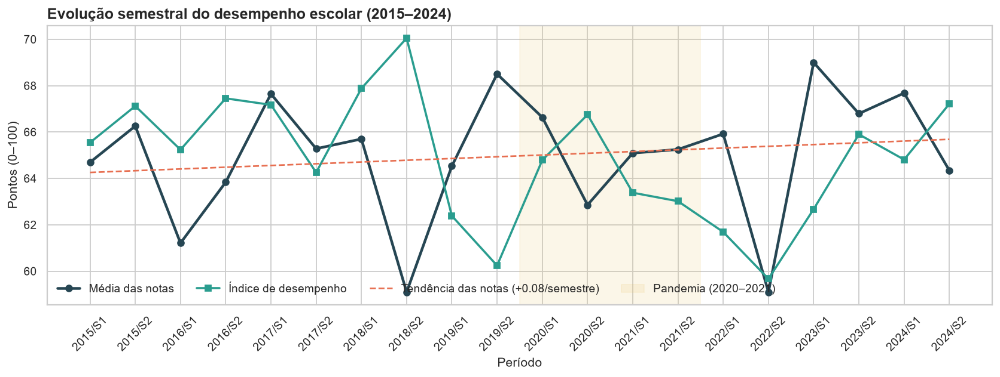
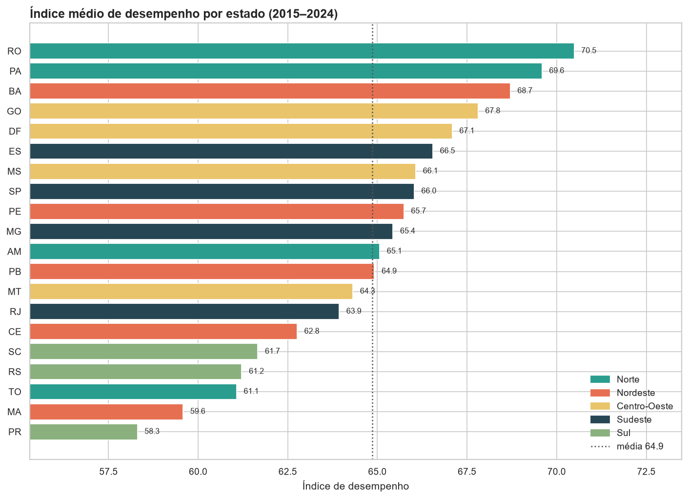
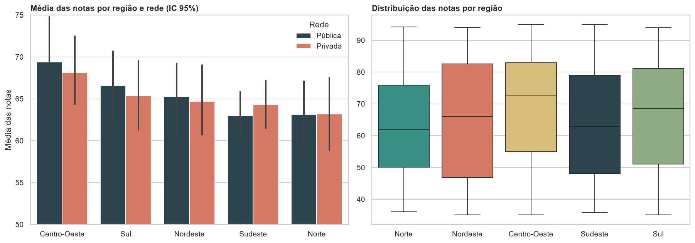
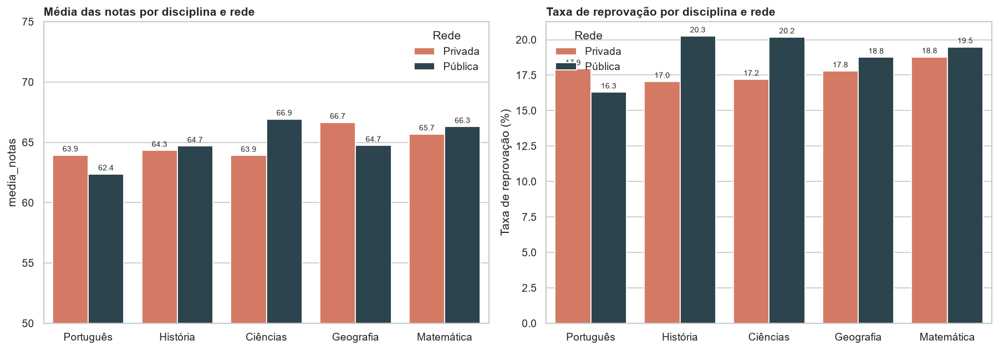
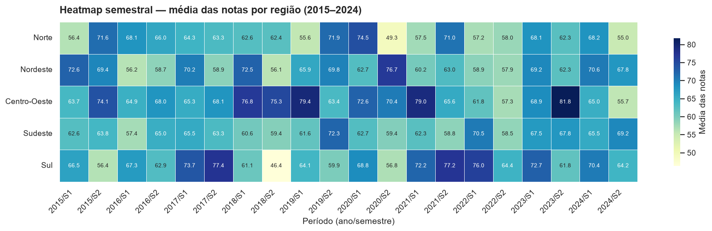
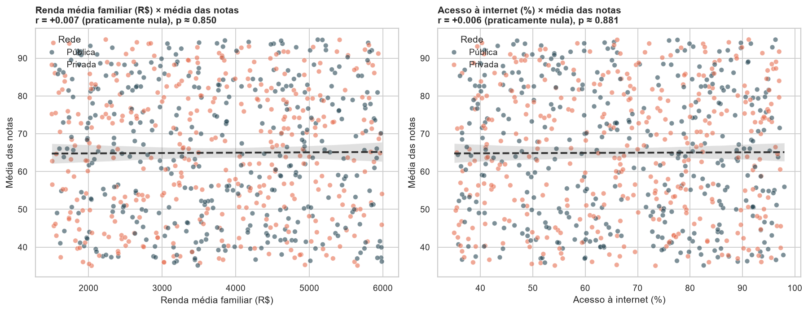
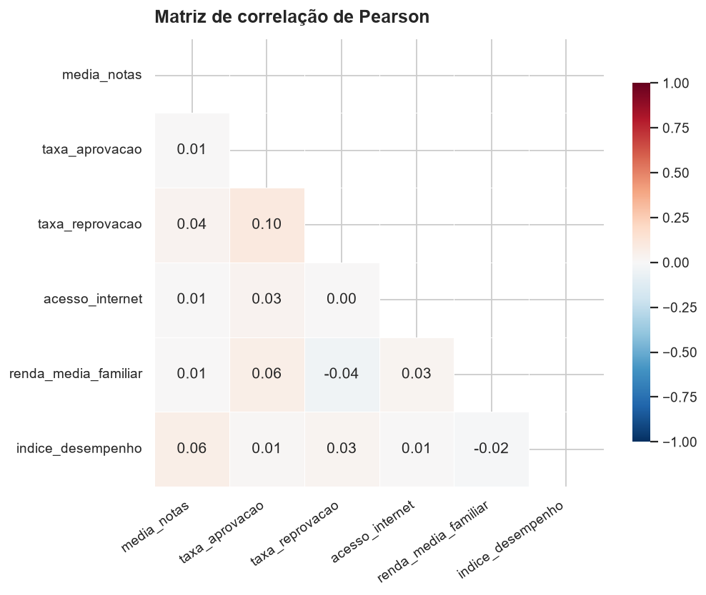
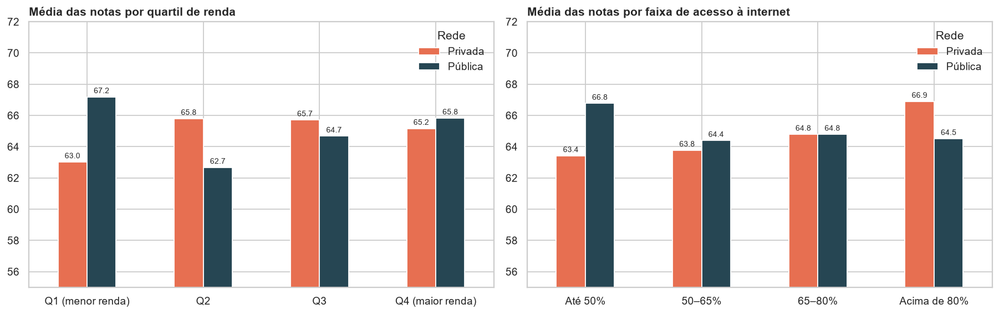

Aplicação analítica para investigar notas, aprovação, redes de ensino, disciplinas e fatores socioeconômicos por região e estado, com dashboard interativo em Streamlit.
O desempenho escolar é um indicador central da qualidade da educação e influencia formação profissional, inclusão social, desenvolvimento econômico e redução das desigualdades. A análise de dados educacionais permite identificar padrões de aprendizagem, desigualdades regionais e fatores associados ao rendimento dos estudantes. O projeto responde a sete perguntas orientadoras:
Dataset simulado fornecido pela disciplina (simulacao_desempenho_escolar_brasil.csv): 740 observações de município × rede × disciplina × semestre, de 2015 a 2024, cobrindo 20 estados das 5 regiões, 2 redes de ensino e 5 disciplinas.
| Coluna | Descrição |
|---|---|
ano, semestre, data | Período letivo |
regiao, uf, municipio | Localização |
rede_ensino | Pública ou Privada |
disciplina | Matemática, Português, Ciências, História, Geografia |
media_notas | Média geral das notas (0–100) |
taxa_aprovacao, taxa_reprovacao | Percentuais escolares |
acesso_internet | Percentual de acesso digital |
renda_media_familiar | Renda média (R$) |
indice_desempenho, nivel_desempenho | Índice geral e faixa (Baixo → Excelente) |
taxas_inconsistentes para aprovação + reprovação > 100 % (39,3 % dos registros) e nivel_calculado derivado do índice, porque o nível informado não acompanha o índice (24,2 % de concordância).periodo, nome_uf, faixa_renda (quartis), faixa_internet, score_composto, periodo_pandemia.vw_desempenho.Indicadores calculados sobre a base completa. No dashboard eles reagem a todos os filtros.
Gráficos gerados no notebook com Matplotlib e Seaborn. Cada um responde a uma das perguntas orientadoras; a versão interativa está no dashboard.








Aplicação multipágina em Streamlit, publicada no Streamlit Community Cloud. Os sete filtros obrigatórios (ano, semestre, região, estado, rede, disciplina e nível) ficam na barra lateral e valem para todas as páginas; KPIs, gráficos, interpretações e conclusão são recalculados a cada seleção.
Título, descrição do problema, 6 KPIs dinâmicos, linha temporal, barras por disciplina e estado, heatmap semestral, dispersão renda × notas, tabela resumo, interpretação e conclusão executiva.
Série semestral segmentada, média anual com média móvel, variação e desvio-padrão, heatmap configurável por região, estado, disciplina ou rede.
Mapa coroplético do Brasil (Plotly) com nomes via API do IBGE, ranking de estados, boxplots por região e medidas de desigualdade.
Pública × privada, diferença por estado, barras por disciplina e distribuição dos níveis de desempenho.
Dispersões com tendência, Pearson com r², t e p-valor, análise por quartis de renda e faixas de internet, matriz de correlação.
Tabela dinâmica configurável, download, upload de CSV com o mesmo pipeline, (re)criação do banco SQLite e consultas SQL.
Bibliotecas obrigatórias da disciplina e funcionalidades avançadas implementadas.
| Funcionalidade | Tecnologia |
|---|---|
| Dashboard multipágina | Streamlit (pages/) |
| Persistência + modelagem relacional | SQLAlchemy ORM + SQLite (esquema estrela) |
| Consumo de API | Requests — API de Localidades do IBGE + GeoJSON |
| Mapas interativos | Plotly choropleth |
| Correlação estatística | Pandas/NumPy — Pearson, r², t, p-valor |
| Séries temporais avançadas | Pandas/NumPy — média móvel, variação, tendência |
| Integração de múltiplas fontes | CSV + API + banco |
projeto-desempenho-escolar/
├── app.py # dashboard (navegação)
├── pages/ # 6 páginas do dashboard
├── utils/ # dados, gráficos, filtros, APIs
├── database/ # SQLAlchemy + SQLite
├── notebooks/
│ └── analise_desempenho_escolar.ipynb
├── dados/
│ └── simulacao_desempenho_escolar_brasil.csv
├── imagens/ # gráficos do notebook
├── index.html # esta página
├── requirements.txt
└── README.md